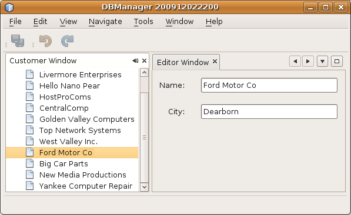

Apache NetBeans
Apache NetBeansLatest release
Tutorial do aplicativo CRUD para a plataforma NetBeans
| This tutorial needs a review. You can edit it in GitHub following these contribution guidelines. |
Este tutorial mostra como integrar um banco de dados Java DB com um aplicativo da plataforma NetBeans. Começamos por explorar um banco de dados Java DB, do qual criamos uma classe de entidade. No entanto, observe que estas instruções não são aplicáveis somente ao Java DB. Ao invés disso, elas são relevantes para qualquer banco de dados relacional suportado pelo NetBeans IDE. A seguir, colocamos as classes da entidade em um módulo, junto com os módulos dos JPA JARS relacionados.
Uma vez que os módulos acima fizerem parte do nosso aplicativo, criamos um novo módulo que fornece a interface do usuário para o nosso aplicativo. O novo módulo fornece ao usuário uma hierarquia em árvore mostrando os dados do banco de dados. Nós então criamos outro módulo que permite que o usuário edite os dados exibidos pelo primeiro módulo. Ao separar o visualizador do editor em módulos distintos, permitimos que o usuário instale um editor diferente para o mesmo visualizador, já que editores diferentes poderiam ser criados por fornecedores externos, alguns comercialmente e alguns sem custo. É esta a flexibilidade que a arquitetura modular da plataforma NetBeans torna possível.
Uma vez que tivermos um editor, começamos a adicionar a funcionalidade CRUD (Create, Read, Update, Delete). Primeiro, o "R" que indica "Read" (ler) é manipulado pelo visualizador acima descrito. A seguir, é manipulado o "U" para "Update" (atualizar), seguido pelo "C" para "Create" (criar) e pelo "D" para "Delete" (excluir).
Ao final do tutorial, você terá aprendido sobre a gama de recursos da plataforma NetBeans que lhe ajudam na criação de aplicativos deste tipo. Por exemplo, você aprendeu sobre o UndoRedo.Manager e o ExplorerManager , assim como sobre os componentes Swing da plataforma NetBeans, tais como TopComponent e BeanTreeView .
Observação: este documento usa a versão NetBeans IDE 6.8. Se você estiver usando uma versão anterior, veja a versão 6.7 deste documento.
O aplicativo que você criará neste tutorial terá esta aparência:

É aconselhável assistir à série de screencasts As 10 principais APIs do NetBeans antes de começar a trabalhar neste tutorial. Muitos dos conceitos tratados neste tutorial são discutidos em maior detalhe dentro da série de screencasts.
Configurando o aplicativo
Vamos começar por criar um novo aplicativo NetBeans.
-
Escolha Arquivo > Novo projeto (Ctrl-Shift-N). Em Categorias, selecione Módulos do NetBeans. Em Projetos, selecione Aplicativo da plataforma NetBeans. Clique em Próximo.
-
No painel Nome e localização, digite
DBManagerno campo Nome do projeto. Clique em Terminar.
O IDE cria o projeto DBManager . O projeto é um contêiner para todos os outros módulos que você criará.

Integrando o banco de dados
Para poder integrar o banco de dados, é preciso criar classes de entidades de seu banco de dados e integrar estas classes de entidades, junto com seus JARs relacionados, com os módulos que fazem parte de seu aplicativo da plataforma NetBeans.
Criando as classes de entidade
Nesta seção, você gera classes de entidade de um banco de dados selecionado.
-
Neste exemplo, use a janela Serviços para conectar-se ao banco de dados de amostra que está incluído no NetBeans IDE:

Como alternativa, use qualquer banco de dados que desejar e adapte as etapas que se seguem para seu caso particular. No caso do MySQL, consulte Conectando-se a um banco de dados MySQL.
-
No IDE, escolha Arquivo | Novo projeto, seguido por Java | Biblioteca de classes Java, para criar uma nova biblioteca denominada
CustomerLibrary.
-
Na janela Projetos, clique com o botão direito do mouse no projeto da biblioteca e escolha Arquivo | Novo arquivo, seguido por Persistência | Classes de entidade do banco de dados. No assistente, selecione o banco de dados e as tabelas necessárias. Aqui, escolhemos "Customer" e, a seguir, "Discount Code" é adicionado automaticamente, dado que há uma relação entre estas duas tabelas.

-
Especifique a estratégia de persistência, que pode ser qualquer uma das opções disponíveis. Aqui, visto que precisamos escolher algo, escolheremos EclipseLink:

-
Especifique "demo" como o nome do pacote no qual as classes de entidade serão geradas.

-
Clique em Terminar. Após ter completado esta etapa, examine o código gerado e observe que, entre outras coisas, você agora tem um arquivo
persistence.xmlem uma pasta denominada META-INF, assim como as classes de entidade para cada uma de suas tabelas:

-
Construa a biblioteca Java e você terá um arquivo JAR na pasta "dist" do projeto da biblioteca, a qual poderá visualizar na janela Arquivos:

Colocando a classe da entidade JAR em um módulo
Nesta seção, você adiciona seu primeiro módulo ao aplicativo! O novo módulo NetBeans conterá o arquivo JAR que você criou na seção anterior.
-
Clique com o botão direito do mouse no nó do módulo
DBManagerna janela Projetos e escolha Adicionar nova biblioteca.
-
Selecione o JAR criado na subsseção anterior e complete o assistente, especificando quaisquer valores que desejar. Vamos supor que o aplicativo destina-se a tratar com clientes no shop.org, em cujo caso um identificador único "org.shop.model" é apropriado para o nome de base do código:

Você agora tem seu primeiro módulo personalizado no novo aplicativo, contendo o JAR que contém as classes de entidade e o arquivo persistence.xml:

Criando outros módulos relacionados
Nesta seção, você cria dois novos módulos, colocando o EclipseLinks JARs, assim como o JAR do conector do banco de dados.
-
Faça o mesmo que fez ao criar o wrapper de bibliotecas para a classe de entidade JAR, mas desta vez para os JARs de EclipseLink, que estão na biblioteca Java "CustomerLibrary" criada anteriormente:

No assistente para módulo de wrapper de bibliotecas, você pode usar Ctrl-clique para selecionar vários JARs.
-
A seguir, crie outro módulo de wrapper de bibliotecas, desta vez para o JAR cliente do banco de dados Java DB, que está disponível na sua distribuição do JDK em
db/lib/derbyclient.jar.
Projetando a interface do usuário
Nesta seção, você cria um protótipo simples de interface do usuário, fornecendo uma janela que usa uma JTextArea para exibir os dados recuperados do banco de dados.
-
Clique com o botão direito do mouse no nó do módulo
DBManagerna janela Projetos e escolha Adicionar novo. Crie um novo módulo denominadoCustomerViewer, com o nome de base de códigoorg.shop.ui.
-
Na janela Projetos, clique com o botão direito do mouse no novo módulo e escolha Novo | Componente de janela. Especifique que ele deve ser criado na posição do
editore que deve ser aberto quando o aplicativo for iniciado. DefinaCustomercomo o prefixo do nome da classe da janela.
-
Use a paleta (Ctrl-Shift-8) para arrastar e soltar uma
JTextAreana nova janela:

-
Adicione isto no fim do construtor TopComponent:
EntityManager entityManager = Persistence.createEntityManagerFactory("CustomerLibraryPU").createEntityManager();
Query query = entityManager.createQuery("SELECT c FROM Customer c");
List<Customer> resultList = query.getResultList();
for (Customer c : resultList) {
jTextArea1.append(c.getName() + " (" + c.getCity() + ")" + "\n");
}Como você não definiu dependências no módulo que fornece o objeto Customer e as JARS de persistência, as declarações acima serão marcadas com linhas sublinhadas em vermelho indicando o erro. Estes serão corrigidos na seção que segue.
Acima, você pode ver as referências à unidade de persistência denominada "CustomerLibraryPU", que é o mesmo nome definido no arquivo persistence.xml . Além disso, há uma referência a uma das classes de entidade, denominada Customer , que está no módulo de classes de entidade. Adapte estas partes às suas necessidades caso sejam diferentes das de cima.
Configurando as dependências
Nesta seção, você habilita alguns dos módulos para usar o código de alguns dos outros módulos. Você faz isso de forma bem explícita ao definir contratos intencionais entre módulos relacionados, ou seja, o oposto à reutilização acidental e caótica do código, que tende a acontecer quando não há uma arquitetura modular estrita, como a fornecida pela plataforma NetBeans.
-
O módulo de classes de entidade precisa ter dependências no módulo Derby Client, assim como no módulo EclipseLink. Clique com o botão direito do mouse no módulo
CustomerLibrary, escolha Propriedades e use a aba Bibliotecas para definir as dependências nos dois módulos que o móduloCustomerLibrarynecessita.
-
O módulo
CustomerViewerprecisa de uma dependência no módulo EclipseLink, assim como no módulo de classes de entidade. Clique com o botão direito do mouse no móduloCustomerViewer, escolha Propriedades e use a aba Bibliotecas para definir as dependências nos dois módulos que o móduloCustomerViewernecessita.
-
Abra o
CustomerTopComponentna visualização Código-fonte, clique com o botão direito do mouse no editor e escolha "Corrigir importações". O IDE agora é capaz de adicionar as declarações importadas, porque os módulos que fornecem as classes necessárias agora estão disponíveis noCustomerTopComponent.
Você agora definiu os contratos entre os módulos em seu aplicativo, fornecendo-lhe o controle sobre as dependências entre as distintas partes do código.
Executando o protótipo
Nesta seção, você executa o aplicativo para que possa ver se está acessando corretamente seu banco de dados.
-
Inicie seu servidor de banco de dados.
-
Execute o aplicativo. O seguinte deverá ser exibido:

Você agora tem um protótipo simples que compreende um aplicativo da plataforma NetBeans que exibe os dados do seu banco de dados, o qual será ampliado na próxima seção.
Integrando a funcionalidade CRUD
Para poder criar a funcionalidade CRUD que se integra com suavidade à plataforma NetBeans, alguns padrões bem específicos de codificação da plataforma NetBeans precisam ser implementados. A seção que segue descreve estes padrões em detalhes.
Ler
Nesta seção, você altera a JTextArea , apresentada na seção anterior, para uma visualização do explorador da plataforma NetBeans. As visualizações do explorador da plataforma NetBeans são componentes Swing que se integram melhor com a plataforma NetBeans do que os componentes padrão do Swing. Entre outras coisas, elas oferecem suporte à noção de um contexto, o que permite que elas detectem o contexto.
Ao representar seus dados, você terá um modelo hierárquico genérico fornecido por uma classe Node da plataforma NetBeans, que pode ser exibido por quaisquer das visualizações do explorador da plataforma NetBeans. Esta seção termina com uma explicação de como sincronizar as visualizações do explorador com a janela Propriedades da plataforma Netbeans.
-
Em seu
TopComponent, exclua aJTextAreana visualização Desenho e comente seu código relacionado na visualização Código-fonte:
EntityManager entityManager = Persistence.createEntityManagerFactory("CustomerLibraryPU").createEntityManager();
Query query = entityManager.createQuery("SELECT c FROM Customer c");
List<Customer> resultList = query.getResultList();
//for (Customer c : resultList) {
// jTextArea1.append(c.getName() + " (" + c.getCity() + ")" + "\n");
//}-
Clique com o botão direito do mouse no módulo
CustomerViewer, escolha Propriedades e use a aba Bibliotecas para definir as dependências nos nós da API e a API do explorador e da folha de propriedades.
-
A seguir, altere a assinatura da classe para implementar o
ExplorerManager.Provider:
final class CustomerTopComponent extends TopComponent implements ExplorerManager.ProviderSerá necessário sobrepor o getExplorerManager()
@Override
public ExplorerManager getExplorerManager() {
return em;
}Acima da classe, declare e inicialize o ExplorerManager :
private static ExplorerManager em = new ExplorerManager();Assista As 10 principais APIs do NetBeans para obter os detalhes para o código acima, especialmente o screencast que trata dos nós da API e da API do explorador e da folha de propriedades.
-
Alterne para a visualização Desenho do
TopComponent, clique com o botão direito do mouse na paleta, escolha Gerenciador de paleta | Adicionar do JAR. A seguir, vá aorg-openide-explorer.jar, que está na pastaplatform11/modules, dentro do diretório de instalação do NetBeans IDE. Feche a BeanTreeView e complete o assistente. Agora você deveria ver aBeanTreeViewna paleta. Arraste-a da paleta e solte-a na janela.
-
Crie uma classe de fábrica que criará um novo BeanNode para cada cliente do seu banco de dados:
import demo.Customer;
import java.beans.IntrospectionException;
import java.util.List;
import org.openide.nodes.BeanNode;
import org.openide.nodes.ChildFactory;
import org.openide.nodes.Node;
import org.openide.util.Exceptions;
public class CustomerChildFactory extends ChildFactory<Customer> {
private List<Customer> resultList;
public CustomerChildFactory(List<Customer> resultList) {
this.resultList = resultList;
}
@Override
protected boolean createKeys(List<Customer> list) {
for (Customer Customer : resultList) {
list.add(Customer);
}
return true;
}
@Override
protected Node createNodeForKey(Customer c) {
try {
return new BeanNode(c);
} catch (IntrospectionException ex) {
Exceptions.printStackTrace(ex);
return null;
}
}
}-
De volta ao
CustomerTopComponent, use oExplorerManagerpara passar a lista de resultados da consulta JPA paraNode:
EntityManager entityManager = Persistence.createEntityManagerFactory("CustomerLibraryPU").createEntityManager();
Query query = entityManager.createQuery("SELECT c FROM Customer c");
List<Customer> resultList = query.getResultList();
*em.setRootContext(new AbstractNode(Children.create(new CustomerChildFactory(resultList), true)));*
//for (Customer c : resultList) {
// jTextArea1.append(c.getName() + " (" + c.getCity() + ")" + "\n");
//}-
Execute o aplicativo. Quando o aplicativo estiver sendo executado abra a janela Propriedades. Observe que embora os dados estejam disponíveis, exibidos em uma
BeanTreeView, aBeanTreeViewnão está sincronizada com a janela Propriedades, que está disponível através de Janela | Propriedades. Em outras palavras, nada é exibido na janela Propriedades quando você move acima e abaixo na hierarquia da árvore.
-
Sincronize a janela Propriedades com
BeanTreeViewao adicionar o seguinte construtor noTopComponent:
associateLookup(ExplorerUtils.createLookup(em, getActionMap()));Aqui nós adicionamos o ExplorerManager e o ActionMap do TopComponent ao Lookup do TopComponent . Uma consequência disso, é que a janela Propriedades começa a exibir o nome e o texto da dica de ferramenta do Node selecionado.
-
Execute novamente o aplicativo e observe que a janela Propriedades agora está sincronizada com a visualização do explorador:

Agora você pode visualizar seus dados na hierarquia da árvore, assim como deveria ser capaz de fazer com um JTree . No entanto, também é possível alternar entre diferentes visualizações do explorador sem a necessidade de alterar nada no modelo porque o ExplorerManager faz a mediação entre o modelo e a visualização. Finalmente, agora também é possível sincronizar a visualização com a janela Propriedades.
Atualizar
Nesta seção, primeiro você cria um editor. O editor será fornecido por um novo módulo do NetBeans. Portanto, primeiro você criará um novo módulo. A seguir, dentro daquele novo módulo, criará um novo TopComponent , contendo dois JTextFields , em cada uma das colunas que deseja permitir que sejam editadas pelo usuário. Será necessário deixar que o módulo do visualizador se comunique com o módulo do editor. Sempre que um novo Node for selecionado no módulo do visualizador, você adicionará o objeto Customer atual ao Lookup . No módulo do editor, você ouvirá o Lookup para a apresentação dos objetos Customer . Sempre que um novo objeto Customer for introduzido no Lookup , você atualizará o JTextFields no editor.
A seguir, você sincronizará seu JTextFields com a funcionalidade de Desfazer, Refazer e Salvar da plataforma NetBeans. Em outras palavras, quando o usuário faz alterações em um JTextField , você deseja que a funcionalidade existente da plataforma NetBeans se torne disponível para que, em vez de ter que criar uma nova funcionalidade, você tenha somente que utilizar o suporte da plataforma NetBeans. Para este fim, será necessário usar o UndoRedoManager junto com o SaveCookie .
-
Crie um novo módulo denominado
CustomerEditorcom oorg.shop.editorcomo o nome de base do código.
-
Clique com o botão direito do mouse no módulo
CustomerEditore escolha Novo | Componente de janela. Certifique-se de especificar que a janela deve aparecer na posição doeditore que deve abrir quando o aplicativo for iniciado. No painel final do assistente, defina "Editor" como o prefixo do nome da classe.
-
Use a paleta (Ctrl-Shift-8) para adicionar dois
JLabelse doisJTextFieldsna nova janela. Defina os textos dos rótulos como "Nome" e "Cidade" e defina os nomes das variáveis dos doisJTextFieldscomojTextField1ejTextField2.
No construtor de GUI, a janela agora deve se parecer com a figura seguinte:

-
Volte para o módulo
CustomerViewere altere o arquivolayer.xmlpara que especifique que a janelaCustomerTopComponentaparecerá no modoexplorer.
Clique com o botão direito do mouse no projeto do aplicativo e escolha "Limpar", após alterar o arquivo layer.xml . Porquê? Porque sempre que você executa o aplicativo e o fecha, as posições da janela são armazenadas no diretório do usuário. Portanto, se o CustomerViewer foi inicialmente exibido no modo editor , ele permanecerá no modo editor até que você faça "Limpar", redefinindo, assim, o diretório do usuário (ou seja, excluindo o diretório do usuário) e permitindo que o CustomerViewer seja exibido na posição definida atualmente no arquivo layer.xml .
Verifique também se BeanTreeView no CustomerViewer será ampliada na horizontal e na vertical quando o usuário redimensionar o aplicativo. Verifique isso abrindo a janela, selecionando BeanTreeView e clicando nos botões de seta na barra de ferramentas do construtor da GUI.
-
Execute o aplicativo e certifique-se de ver o seguinte quando o aplicativo se iniciar:

-
Agora podemos começar a adicionar alguns códigos. Primeiramente, precisamos mostrar no editor o objeto Customer atualmente selecionado:
-
Inicie por adaptar o módulo
CustomerViewerpara que o objetoCustomeratual seja adicionado aoLookupda janela do visualizador sempre que um novoNodefor selecionado. Para isso, crie umAbstractNode, em vez de umBeanNode, na classeCustomerChildFactory. Isso permite adicionar o objetoCustomeratual aoLookupdo Node, conforme ilustrado a seguir (observe a parte em negrito):
-
@Override
protected Node createNodeForKey(Customer c) {
Node node = new AbstractNode(Children.LEAF, Lookups.singleton(c));
node.setDisplayName(c.getName());
node.setShortDescription(c.getCity());
return node;
// try {
// return new BeanNode(c);
// } catch (IntrospectionException ex) {
// Exceptions.printStackTrace(ex);
// return null;
// }
}Agora, sempre que um novo Node for criado, o que acontece sempre que o usuário seleciona um novo estado no visualizador, um novo objeto Customer é adicionado ao Lookup do Node .
-
Agora vamos alterar o módulo do editor de tal forma que sua janela detecte os objetos
Customerque são adicionados aoLookup. Primeiro, defina uma dependência no módulo do editor que fornece a classe da entidade, bem como o módulo que fornece os JARS de persistência. -
A seguir, altere a assinatura da classe
EditorTopComponentepara implementar oLookupListener:
public final class EditorTopComponent extends TopComponent implements LookupListener-
Substitua o
resultChangedpara que osJTextFieldssejam atualizados sempre que um novo objetoCustomerfor introduzido noLookup:
@Override
public void resultChanged(LookupEvent lookupEvent) {
Lookup.Result r = (Lookup.Result) lookupEvent.getSource();
Collection<Customer> coll = r.allInstances();
if (!coll.isEmpty()) {
for (Customer cust : coll) {
jTextField1.setText(cust.getName());
jTextField2.setText(cust.getCity());
}
} else {
jTextField1.setText("[no name]");
jTextField2.setText("[no city]");
}
}-
Agora que o
LookupListenerestá definido, precisamos adicioná-lo a algo. Aqui, nós o adicionamos aoLookup.Resultobtido do contexto global. Os proxies do contexto global do contexto doNodeselecionado. Por exemplo, se "Ford Motor Co" for selecionado na hierarquia da árvore, o objetoCustomerde "Ford Motor Co" é adicionado aoLookupdoNodeque, por ser oNodeatualmente selecionado, significa que o objetoCustomerde "Ford Motor Co" agora está disponível no contexto global. Isso é, então, passado para oresultChanged, fazendo com que os campos de texto sejam preenchidos.
Todo o acima começa a acontecer, ou seja, o LookupListener se torna ativo sempre que a janela do editor for aberta, como pode ser visto abaixo:
@Override
public void componentOpened() {
result = Utilities.actionsGlobalContext().lookupResult(Customer.class);
result.addLookupListener(this);
resultChanged(new LookupEvent(result));
}
@Override
public void componentClosed() {
result.removeLookupListener(this);
result = null;
}Como a janela do editor é aberta quando o aplicativo é iniciado, o LookupListener está disponível no momento da inicialização do aplicativo.
-
Finalmente, declare a variável do resultado acima da classe, como segue:
private Lookup.Result result = null;-
Execute novamente o aplicativo e observe que a janela do editor é atualizada sempre que você seleciona um novo
Node:

No entanto, observe o que acontece quando você alterna o foco para a janela do editor:

Como o Node não é mais o atual, o objeto Customer não está mais no contexto global. Isto se deve, conforme mostrado acima, aos proxies do contexto global do Lookup do Node atual. Portanto, neste caso, não podemos usar o contexto global. Em vez disso, usaremos o Lookup local fornecido pela janela Clientes.
Reescreva esta linha:
result = Utilities.actionsGlobalContext().lookupResult(Customer.class);Para:
result = WindowManager.getDefault().findTopComponent("CustomerTopComponent").getLookup().lookupResult(Customer.class);A string "CustomerTopComponent" é a ID do CustomerTopComponent , que é uma constante da string que você pode encontrar no código-fonte do CustomerTopComponent . Uma desvantagem da abordagem acima é a de que seu novo EditorTopComponent funciona somente se ele puder encontrar um TopComponent com a ID "CustomerTopComponent". Isto precisa ser explicitamente documentado para que os desenvolvedores de editores alternativos possam saber que precisam identificar o visualizador TopComponent desta forma, ou é necessário reescrever o modelo de seleção, conforme descrito aqui por Tim Boudreau.
Se usar uma das abordagens acima, verificará que o contexto não se perde ao alternar o foco para o EditorTopComponent , conforme ilustrado abaixo:

Visto que agora você está usando AbstractNode , em vez de BeanNode , nenhuma propriedade é mostrada na janela Propriedades. Você mesmo precisa fornecê-las, conforme descrito no Tutorial da API de nós.
-
Em segundo lugar, vamos trabalhar na funcionalidade Desfazer/Refazer. O que gostaríamos que acontecesse é que sempre que o usuário fizer uma alteração em um dos
JTextFields, o botão "Desfazer" e o botão "Refazer", assim como os itens de menu relacionados no meu Editar, se tornem habilitados. Para este fim, a plataforma NetBeans torna o UndoRedo.Manager disponível.-
Declare e crie uma instância de um novo UndoRedoManager acima do
EditorTopComponent:
-
private UndoRedo.Manager manager = new UndoRedo.Manager();-
A seguir, sobreponha o método
getUndoRedo()noEditorTopComponent:
@Override
public UndoRedo getUndoRedo() {
return manager;
}-
No construtor do
EditorTopComponent, adicione umKeyListeneraoJTextFieldse, dentro dos métodos relacionados que você precisa implementar, adicione oUndoRedoListeners:
jTextField1.getDocument().addUndoableEditListener(manager);
jTextField2.getDocument().addUndoableEditListener(manager);-
Execute o aplicativo e mostre a funcionalidade Desfazer e Refazer em ação, os botões e também os itens de menu. A funcionalidade funciona exatamente como esperado. Você pode desejar alterar o
KeyListenerpara que nem TODAS as teclas causem a habilitação da funcionalidade Desfazer/Refazer. Por exemplo, quando Enter é pressionado, você provavelmente não deseja que a funcionalidade Desfazer/Refazer se torne disponível. Portanto, adapte o código acima para se adequar às suas necessidades administrativas.
-
Em terceiro lugar, precisamos integrar com a funcionalidade Salvar do NetBeans.
-
Por padrão, o botão "Salvar todos" está disponível na barra de ferramentas da plataforma NetBeans. Em nosso cenário atual, não desejamos salvar "todos", por que "todos" se refere a vários documentos. Em nosso caso, temos somente um "documento", que é o editor que estamos reutilizando para todos os nós na hierarquia da árvore. Remova o botão "Salvar todos" e adicione "Salvar" em seu lugar, ao adicionar o seguinte arquivo de camada do módulo
CustomerEditor:
-
<folder name="Toolbars">
<folder name="File">
<file name="org-openide-actions-SaveAction.shadow">
<attr name="originalFile" stringvalue="Actions/System/org-openide-actions-SaveAction.instance"/>
<attr name="position" intvalue="444"/>
</file>
<file name="org-openide-actions-SaveAllAction.shadow_hidden"/>
</folder>
</folder>Agora, quando você executar o aplicativo, verá um ícone diferente na barra de ferramentas. Ao invés do botão "Salvar todos", você agora tem o botão "Salvar" disponível.
-
Defina as dependências na API das caixas de diálogo e na API dos nós.
-
No construtor
EditorTopCompontn, adicione uma chamada para disparar um método (que será definido na etapa seguinte) sempre que uma alteração for detectada:
public EditorTopComponent() {
...
...
...
jTextField1.getDocument().addDocumentListener(new DocumentListener() {
public void insertUpdate(DocumentEvent arg0) {
fire(true);
}
public void removeUpdate(DocumentEvent arg0) {
fire(true);
}
public void changedUpdate(DocumentEvent arg0) {
fire(true);
}
});
jTextField2.getDocument().addDocumentListener(new DocumentListener() {
public void insertUpdate(DocumentEvent arg0) {
fire(true);
}
public void removeUpdate(DocumentEvent arg0) {
fire(true);
}
public void changedUpdate(DocumentEvent arg0) {
fire(true);
}
});
//Create a new instance of our SaveCookie implementation:
impl = new SaveCookieImpl();
//Create a new instance of our dynamic object:
content = new InstanceContent();
//Add the dynamic object to the TopComponent Lookup:
associateLookup(new AbstractLookup(content));
}
...
...
...-
Aqui estão os dois métodos mencionados acima. Primeiro, o método que é disparado sempre que uma alteração for detectada. Uma implementação do
SaveCookieda API de nós é adicionada aoInstanceContentsempre que uma alteração for detectada:
public void fire(boolean modified) {
if (modified) {
//If the text is modified,
//we add SaveCookie impl to Lookup:
content.add(impl);
} else {
//Otherwise, we remove the SaveCookie impl from the lookup:
content.remove(impl);
}
}
private class SaveCookieImpl implements SaveCookie {
@Override
public void save() throws IOException {
Confirmation message = new NotifyDescriptor.Confirmation("Do you want to save \""
+ jTextField1.getText() + " (" + jTextField2.getText() + ")\"?",
NotifyDescriptor.OK_CANCEL_OPTION,
NotifyDescriptor.QUESTION_MESSAGE);
Object result = DialogDisplayer.getDefault().notify(message);
//When user clicks "Yes", indicating they really want to save,
//we need to disable the Save action,
//so that it will only be usable when the next change is made
//to the JTextArea:
if (NotifyDescriptor.YES_OPTION.equals(result)) {
fire(false);
//Implement your save functionality here.
}
}
}-
Execute o aplicativo e observe a habilitação/desabilitação do botão Salvar:

No momento, nada acontece quando você clica em OK na caixa de diálogo acima. Na próxima etapa, adicionamos alguns códigos JPA para manipular a persistências de nossas alterações.
-
A seguir, adicionamos o código JPA para persistência de nossa alteração. Faça isso substituindo o comentário "//Implement your save functionality here." (Implemente sua funcionalidade salva aqui). O comentário deveria ser substituído pelo código a seguir:
EntityManager entityManager = Persistence.createEntityManagerFactory("CustomerLibraryPU").createEntityManager();
entityManager.getTransaction().begin();
Customer c = entityManager.find(Customer.class, customer.getCustomerId());
c.setName(jTextField1.getText());
c.setCity(jTextField2.getText());
entityManager.getTransaction().commit();O "customer" de customer.getCustomerId()() não está definido no momento. Adicione a linha em negrito ao resultChanged abaixo, após declarar Customer customer; acima da classe, de modo que o objeto Customer atual defina o customer , o qual é então usado no código de persistência acima para obter a ID do objeto Customer atual.
@Override
public void resultChanged(LookupEvent lookupEvent) {
Lookup.Result r = (Lookup.Result) lookupEvent.getSource();
Collection<Customer> c = r.allInstances();
if (!c.isEmpty()) {
for (Customer customer : c) {
*customer = cust;*
jTextField1.setText(customer.getName());
jTextField2.setText(customer.getCity());
}
} else {
jTextField1.setText("[no name]");
jTextField2.setText("[no city]");
}
}-
Execute o aplicativo e altere alguns dados. No momento, não temos a funcionalidade "Atualizar" (que será adicionada na etapa seguinte), portanto, para ver os dados alterados, reinicie o aplicativo. Aqui, por exemplo, a hierarquia da árvore mostra o nome do cliente persistente "Ford Motor Co":

-
Em quarto lugar, precisamos adicionar a funcionalidade de atualização para o visualizador Customer. Você pode desejar adicionar um
Temporizadorque periodicamente atualiza o visualizador. No entanto, neste exemplo, nós adicionaremos um item de menu "Atualizar" no nó Raiz, para que o usuário seja capaz de atualizar manualmente o visualizador.-
No pacote principal do módulo
CustomerViewer, crie um novoNode, que substituirá oAbstractNodeque estamos usando atualmente como a raiz dos filhos do visualizador. Observe que também vinculamos uma ação "Atualizar" com nosso novo nó raiz.
-
public class CustomerRootNode extends AbstractNode {
public CustomerRootNode(Children kids) {
super(kids);
setDisplayName("Root");
}
@Override
public Action[] getActions(boolean context) {
Action[] result = new Action[]{
new RefreshAction()};
return result;
}
private final class RefreshAction extends AbstractAction {
public RefreshAction() {
putValue(Action.NAME, "Refresh");
}
public void actionPerformed(ActionEvent e) {
CustomerTopComponent.refreshNode();
}
}
}-
Adicione este método ao
CustomerTopComponentpara atualizar a visualização:
public static void refreshNode() {
EntityManager entityManager = Persistence.createEntityManagerFactory("CustomerLibraryPU").createEntityManager();
Query query = entityManager.createQuery("SELECT c FROM Customer c");
List<Customer> resultList = query.getResultList();
em.setRootContext(new *CustomerRootNode*(Children.create(new CustomerChildFactory(resultList), true)));
}Agora, substitua o código acima no construtor do CustomerTopComponent por uma chamada para código acima. Como você pode ver na parte realçada acima, agora estamos usando nosso CustomerRootNode ao invés do AbstractNode . O CustomerRootNode inclui a ação "Atualizar", que chama o código acima.
-
Na sua funcionalidade de salvar, adicione a chamada ao método acima para que, sempre que os dados forem salvos, ocorra uma atualização automática. É possível utilizar diferentes abordagens ao implementar esta extensão à funcionalidade de salvar. Por exemplo, você pode criar um novo módulo que contém a ação de atualização. Tal módulo é, então, compartilhado entre o módulo do visualizador e o módulo do editor, proporcionando a funcionalidade que é comum a ambos.
-
Execute novamente o aplicativo e observe que você tem um novo nó raiz com uma ação "Atualizar".

-
Altere alguns dados, salve-os, chame a ação Atualizar e observe que o visualizador está atualizado.
Você agora aprendeu como a plataforma NetBeans tem a permissão de manipular as alterações no JTextFields . Sempre que o texto muda, os botões Desfazer e Refazer da plataforma NetBeans são habilitados ou desabilitados. Também, o botão Salvar é corretamente habilitado ou desabilitado, permitindo que o usuário salve os dados alterados no banco de dados.
Criar
Nesta seção, você permite que o usuário crie uma nova entrada no banco de dados.
-
Clique com o botão direito do mouse no módulo
CustomerEditore escolha "Nova ação". Use o assistente Nova ação para criar uma nova ação "Sempre habilitado". A nova ação deve ser exibida na barra de ferramentas ou na barra de menus. Na próxima etapa do assistente, chame a açãoNewAction.
Certifique-se de ter disponível um ícone 16x16, que o assistente força que seja selecionado, se for indicado que deseja que a ação seja chamada da barra de ferramentas.
-
Na nova ação, deixe que o
TopComponentseja aberto comJTextFieldsvazios:
import java.awt.event.ActionEvent;
import java.awt.event.ActionListener;
public final class NewAction implements ActionListener {
public void actionPerformed(ActionEvent e) {
EditorTopComponent tc = EditorTopComponent.getDefault();
tc.resetFields();
tc.open();
tc.requestActive();
}
}A ação implementa a classe ActionListener que está vinculada ao aplicativo através de entradas no arquivo de camadas, colocado pelo assistente Nova ação. Imagine que fácil será quando transferir seu aplicativo Swing existente para a plataforma NetBeans, já que você simplesmente poderá usar as mesmas classes Action usadas em seu aplicativo original, sem a necessidade de reescrevê-las para estarem em conformidade com as classes Action fornecidas pela plataforma NetBeans!
No EditorTopComponent , adicione o seguinte método para redefinir o JTextFields e para criar um novo objeto Customer :
public void resetFields() {
customer = new Customer();
jTextField1.setText("");
jTextField2.setText("");
}-
No
SaveCookie, assegure que um retorno denullindique que a nova entrada está salva, ao invés de uma entrada existente ser atualizada:
public void save() throws IOException {
Confirmation message = new NotifyDescriptor.Confirmation("Do you want to save \""
+ jTextField1.getText() + " (" + jTextField2.getText() + ")\"?",
NotifyDescriptor.OK_CANCEL_OPTION,
NotifyDescriptor.QUESTION_MESSAGE);
Object result = DialogDisplayer.getDefault().notify(msg);
//When user clicks "Yes", indicating they really want to save,
//we need to disable the Save button and Save menu item,
//so that it will only be usable when the next change is made
//to the text field:
if (NotifyDescriptor.YES_OPTION.equals(result)) {
fire(false);
EntityManager entityManager = Persistence.createEntityManagerFactory("CustomerLibraryPU").createEntityManager();
entityManager.getTransaction().begin();
*if (customer.getCustomerId() != null)* {
Customer c = entityManager.find(Customer.class, cude.getCustomerId());
c.setName(jTextField1.getText());
c.setCity(jTextField2.getText());
entityManager.getTransaction().commit();
} else {
*Query query = entityManager.createQuery("SELECT c FROM Customer c");
List<Customer> resultList = query.getResultList();
customer.setCustomerId(resultList.size()+1);
customer.setName(jTextField1.getText());
customer.setCity(jTextField2.getText());
//add more fields that will populate all the other columns in the table!
entityManager.persist(customer);
entityManager.getTransaction().commit();*
}
}
}-
Execute novamente o aplicativo e adicione um novo cliente no banco de dados.
Excluir
Nesta seção, você permite que o usuário exclua uma entrada selecionada no banco de dados. Usando os conceitos e códigos acima descritos, implemente você mesmo a ação Excluir.
-
Crie uma nova ação,
DeleteAction. Decida se deseja vinculá-la a um nó Customer ou se deseja vinculá-la à barra de ferramentas, à barra de menus, ao atalho do teclado ou a uma combinação destes. Dependendo de onde deseja vinculá-la, você precisará usar uma abordagem em seu código. Leia novamente o tutorial para obter ajuda, especialmente ao examinar como a ação "Novo" foi criada, enquanto a compara com a ação "Atualizar" no nó raiz.
-
Obtenha o
Customeratual, retorne uma caixa de diálogo 'Tem certeza?', e a seguir exclua a entrada. Para obter ajuda neste ponto, leia novamente o tutorial, focando na parte onde a funcionalidade "Salvar" é implementada. Ao invés de salvar, você agora deseja excluir uma entrada do banco de dados.
Consulte também
Isto conclui o tutorial CRUD da plataforma NetBeans. Este documento descreveu como criar um novo aplicativo na plataforma NetBeans com a funcionalidade CRUD para um determinado banco de dados. Para obter mais informações sobre a criação e o desenvolvimento de aplicativos, consulte os seguintes recursos: